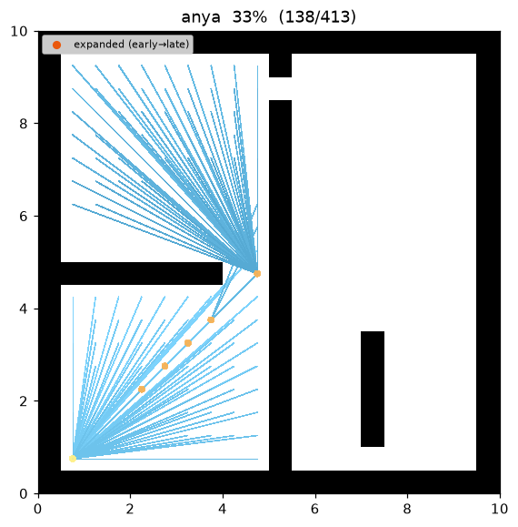
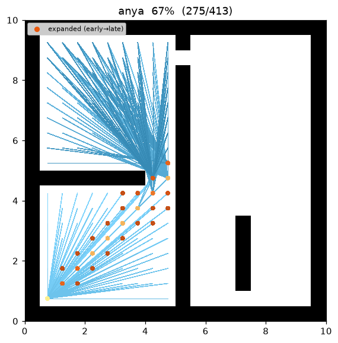
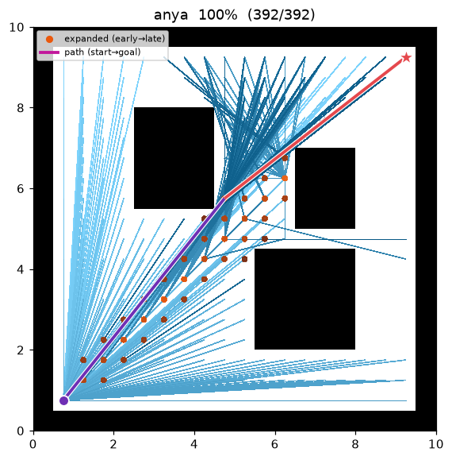

Visibility A* (cell-centre any-angle)¶
| 항목 | 내용 |
|---|---|
| 분류 | any-angle graph search (cell-centre visibility graph) |
| 요구 capability | LineOfSightSpace (neighbors + heuristic + line_of_sight) |
| 완전성 | complete (유한 그래프, 비음수 비용) |
| 최적성 | cell-centre visibility graph 위 최단 — 참 Euclidean any-angle 최적은 아님 (회전점이 셀 중심에 고정) |
| 복잡도 | best-first 탐색; 매 확장마다 root 의 가시영역을 행별 interval 로 투영해 relax |
| 관련 문헌 | LOS: Amanatides & Woo (1987) 2 · weighted: Pohl (1970) 3 · 비교 대상 Theta*: Nash et al. (2007) 1 |
배경¶
Theta*1 는 A* 를 any-angle 로 만든다 — 경로가 grid 를 벗어나 직선 지름길을 취한다 — 하지만 최적이 아니다: 노드의 지름길 부모가 오직 그 조부모뿐이라, 실을 완전히 팽팽하게 당기지 못해 경로가 셀-중심 정점 위에서 가능한 최단보다 조금 더 길게 남는다.
Visibility A* 는 그 여분을 없앤다. 특별한 새 탐색 노드 없이 그냥 A*이되, successor 관계를 grid 인접이 아니라 line-of-sight 가시성으로 바꾼 것이다: 확장된 셀에서 장애물 없는 직선으로 보이는 모든 free 셀로 유클리드 비용만큼 relax 한다. 결과는 셀-중심 visibility graph — 정점 = 도달 가능한 free 셀, 간선 = 상호 LOS-가시 쌍, weight = 직선거리 — 위의 최단 경로이며, admissible·consistent 한 유클리드 휴리스틱으로 구한다.
중요한 한계: 이것은 참 Euclidean any-angle 최적이 아니다. 회전점을 셀 중심으로 제한하므로, 진짜 최단 any-angle 경로가 장애물 모서리(어떤 셀 중심에도 놓이지 않는 점)에서 꺾일 수 있는 여분은 회복하지 못한다. 즉 이 알고리즘은 셀 중심 정점 집합 위의 최적일 뿐이다. 그럼에도 (1) 반환 경로는 항상 유효한 any-angle 경로(모든 leg 이 LOS-clear 직선)이고, (2) 같은 인스턴스에서 비용은 항상 Theta* 이하다 — Theta* 의 출력 자체가 이 셀-중심 visibility graph 위의 한 경로이기 때문이다.
이 저장소 demo 에서 open01 은 Theta* cost 24.241 → Visibility A* 24.208 로 줄어든다 — Theta* 가
조금 남겨둔 여분을 없앤 셀-중심 최단이다. maze01 은 Theta* 가 이미 셀-중심 최적(27.748)이라 같은 비용을
내되 더 적은 노드를 확장한다(95 vs 104).
동작 원리¶
maze01 에서의 탐색. A* 처럼 파면이 goal 로 자라지만, 매 확장이 root 의 가시 영역을 밖으로 펼치고,
최종 경로는 장애물 모서리 근처를 스치는 성근 직선 다각선이다 (단, 회전점은 셀 중심에 고정된다).

탐색 중간 과정 (좌 → 우: 초반 / 중반 / 최종 경로):
 |
 |
 |
open01 최종 결과 — 장애물이 적으면 start→goal 가 단일 직선으로 연결된다 (goal 이 start 에서 직접 보이면
그 직선이 곧 참 최단이기도 하다):

root 의 가시영역을 행별 interval 로 투영¶
한 root 를 확장할 때, 그로부터 LOS-가시한 free 셀을 행별로 모아 연속 열 구간(interval)으로 묶고, 각
구간의 모든 셀을 relax 한다. interval 은 구현·시각화 편의를 위한 묶음일 뿐 — 큐에 들어가는 탐색 노드는
여전히 개별 셀이지 (root, interval) 쌍이 아니다. root 의 가시 집합 전체를 relax 하므로, 탐색은 정확히
셀-중심 visibility graph 위의 A* 가 된다.
Line of sight — grid 와 하나의 충돌 모델¶
line_of_sight(a, b) 는 두 셀 중심을 잇는 선분이 통과 가능한지를, neighbors() 와 동일한
corner-cut 금지 supercover2 규칙으로 판정한다(맵의 is_motion_valid 에 위임). 따라서 "LOS 로 보임"
⇔ "합법적 직선 이동"이며, Visibility A*·Theta*·grid A* 가 하나의 충돌 모델을 공유한다.
VISIBILITY_ASTAR(start, goal):
g[start] ← 0; parent[start] ← start
open ← priority queue keyed by f = g + w·h # h = 유클리드 직선거리
reachable ← start 에 연결된 free 셀 (neighbors() 로 발견)
while open is not empty:
r ← open.pop_min()
if r == goal: return reconstruct(parent, r)
if r already settled: continue # lazy deletion
for each grid row y in reachable: # root 의 가시영역을 행별로 투영
for each maximal interval [a, b] of cells on y visible from r:
for cell in a..b:
cand ← g[r] + euclid(r, cell) # root 로부터의 직선 leg
if cand < g[cell]: # relaxation
g[cell] ← cand; parent[cell] ← r
open.push(cell, cand + w·h(cell, goal))
return failure
최적성과 비용 모델¶
표기. 셀 중심을 \(\mathbb{R}^2\) 의 점으로 본다. 셀-중심 any-angle 경로 \(P=(v_0,\dots,v_k)\) 는 셀 중심을 잇는 다각선으로 모든 구간 \(\overline{v_i v_{i+1}}\) 이 장애물 없음(LOS)이며, 비용은 \(\operatorname{cost}(P)=\sum_i\lVert v_{i+1}-v_i\rVert_2\) 다. \(C^\ast\) 를 그 최소 비용(정점을 셀 중심으로 제한한 최적), \(h(n)=\lVert n-\text{goal}\rVert_2\), \(h^\ast(n)\) 을 \(n\) 에서 goal 까지의 실제 최단 비용이라 하자. 참 연속 Euclidean 최적은 셀 중심이 아닌 모서리에서 꺾일 수 있어 \(C^\ast\) 이하이며, 이 알고리즘은 그 참 최적이 아니라 \(C^\ast\) 를 목표로 한다.
Lemma 1 (유클리드 \(h\) 는 admissible·consistent). 삼각부등식을 구간별로 적용하면 임의의 feasible \(P\) 에 대해 \(\lVert b-a\rVert_2\le\operatorname{cost}(P)\); \(a=n,\ b=\text{goal}\) 로 두면 \(h(n)\le h^\ast(n)\) (admissible). 비용 \(\lVert a-b\rVert_2\) 인 임의의 LOS 간선 \((a,b)\) 에 대해 \(h(a)\le\lVert a-b\rVert_2+h(b)=c(a,b)+h(b)\) (consistent). 따라서 \(w=1\) 에서 best-first 탐색은 노드의 최적 \(g\) 가 확정되기 전에 그 노드를 확장하지 않는다. ∎
Lemma 2 (모든 \(g\) 는 실제 feasible 길이). relaxation 은 line_of_sight(r, cell) 일 때만
\(g[\text{cell}]=g[r]+\lVert r-\text{cell}\rVert_2\) 로 설정하므로, parent 를 펼치면 \(g[\text{cell}]\) 은
장애물 없는 다각선 \(\text{start}\to\cdots\to r\to\text{cell}\) 의 길이 그 자체다. 반환된 \(g[\text{goal}]\)
은 달성 가능한 상한이다 — 경로는 항상 feasible 하다. ∎
Proposition 3 (셀-중심 visibility graph 위 최적). settle 된 모든 root 는 자신으로부터 LOS-visible 한 모든 free 셀로 뻗으므로, 탐색은 정확히 셀-중심 visibility graph \(G=(V,E)\) 위의 A* 다: \(V\) = reachable free 셀, \(E\) = 상호 가시 쌍, weight \(=\lVert\cdot\rVert_2\). Lemma 1 의 consistent 휴리스틱으로 A* 는 \(G\) 의 최단 경로를 반환하고, Lemma 2 로 그 값은 달성 가능하다. 따라서 셀-중심 다각선 위에서 \(\operatorname{cost}(P)=C^\ast\). 회전점을 셀 중심으로 제한한 근사이므로 참 연속 Euclidean 최단과는 차이가 날 수 있다. ∎
Proposition 4 (Theta* 보다 길지 않음). Theta* 의 출력은 하나의 feasible 셀-중심 다각선, 즉 \(G\) 위의
한 경로이므로 \(C^\ast\le\operatorname{cost}(P_\Theta)\); 따라서 모든 인스턴스에서
\(\operatorname{cost}(P)\le\operatorname{cost}(P_\Theta)\). Theta* 의 근시안적 조부모 규칙이 실을 조금
느슨하게 남기는 곳에서 Visibility A* 는 셀-중심 정점 위에서 완전히 팽팽하게 당긴다 (이 저장소 open01:
24.208 vs Theta* 24.241). ∎
측정 (Python, w = 1.0, trace on · 같은 인스턴스에서 Theta* / A*):
| map | Visibility A* cost | Theta* cost | A* cost | Visibility A* expanded | Theta* expanded | waypoints |
|---|---|---|---|---|---|---|
| maze01 | 27.748 | 27.748 | 28.728 | 95 | 104 | 4 |
| open01 | 24.208 | 24.241 | 25.213 | 38 | 66 | 3 |
재현:
python python/demos/demo_visibility_astar.py \
--map maps/grid/maze01.yaml --scenario maps/scenarios/maze01_s1.yaml \
--params configs/global_planning/visibility_astar.yaml --trace out/visibility_astar.jsonl
python tools/viz/replay.py out/visibility_astar.jsonl --gif out/visibility_astar.gif --snapshots out/visibility_astar_snaps/
성질¶
- 완전성: 유한 grid + 비음수 비용에서 complete (A* 와 동일).
- 최적성:
w = 1에서 셀-중심 visibility graph 위 최단 — any-angle 이지만 회전점이 셀 중심에 고정된 근사다. 참 연속 Euclidean any-angle 최적은 아니다. - Theta* 대비 품질: 같은 grid 에서 비용이 항상 Theta* 이하 (Proposition 4).
- 가중치:
w > 1(weighted, Pohl 19703) 은 휴리스틱을 부풀려 더 적은 노드를 확장하지만 최단 보장을 포기한다 — bounded-suboptimal any-angle.
파라미터¶
| 이름 | 타입 | 기본 | 범위 | 설명 |
|---|---|---|---|---|
heuristic_weight |
float | 1.0 | [1.0, 5.0] | f = g + w·h 의 w (h 는 유클리드). 1.0 = 셀-중심 visibility 최단; 1.0 초과 = weighted (더 빠르나 최단 보장 포기) |
방출 Trace 이벤트¶
planning_started → (node_expanded, candidate_evaluated, edge_added)* → path_found → planning_finished
node_expanded(state=r) 는 settle 된 root 마다 한 번 방출된다. 투영된 interval 안의 각 relaxation 은
candidate_evaluated 와 edge_added(state=cell, parent=r) 를 방출하며, parent 는 (비인접일 수 있는)
root 다 — 시각화기는 parent→state 직선을 그대로 그려 any-angle leg 을 렌더하므로 새 trace 이벤트가
필요없다(root 에서 뻗는 edge 다발이 곧 투영된 가시 영역을 보여준다).
참고 문헌¶
-
Nash, A., Daniel, K., Koenig, S., & Felner, A. (2007). "Theta*: Any-Angle Path Planning on Grids." Proc. AAAI Conference on Artificial Intelligence, 1177–1183. PDF ↩↩
-
Amanatides, J., & Woo, A. (1987). "A Fast Voxel Traversal Algorithm for Ray Tracing." Proc. Eurographics, 3–10. PDF ↩↩
-
Pohl, I. (1970). "Heuristic search viewed as path finding in a graph." Artificial Intelligence, 1(3–4), 193–204. doi:10.1016/0004-3702(70)90007-X ↩↩